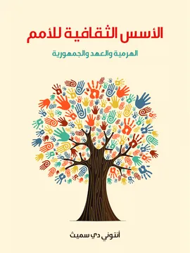

الأسس الثقافية للأمم: الهرمية والعهد والجمهورية

قراءة عربية أصلية محددة النطاق في الصفحات 13 إلى 18 من ملف PDF المرتبط، وليست تلخيصا كاملا للكتاب. نناقش ما تدعمه هذه المقاطع فقط.
الأسس الثقافية للأمم: متى تنشأ الأمة؟
يفتتح أنتوني دي سميث نبذة كتابه بمسألة التحقيب الزمني لتاريخ الأمم والقومية: متى تنشأ الأمة؟ وهي مسألة أثارها ووكر كونور عام ١٩٩٠، وقد خلص إلى أن نشأة الأمم الحديثة تتجاوز الرؤية الحداثية التي ترى أن الأمم والقومية ظهرت مع الثورة الفرنسية والثورة الأمريكية؛ وهذه الافتراضات ما يعزم الكتاب تفنيدها مع منظومة الفكر الحداثي. ويذكر أنه أوضح في «الأصول العرقية للأمم» أن الأمم الحديثة تكونت غالبًا على أساس روابط عرقية سابقة كانت ذات أهمية في الشرق الأدنى القديم وفجر أوروبا الحديثة. وتظهر أشكال مختلفة للأمم في فترات متعاقبة بدلًا من تاريخ واحد للنشأة، تتأثر بأحد التقاليد الحضارية الثلاثة: الهرمية والعهد والجمهورية المدنية، التي ظلت محكمة القبضة على الطبقات المتعلمة من إنجلترا إلى روسيا. ثم يعرض خطة الكتاب من المقدمة في مشاكل «تأريخ الأمة» والنماذج النظرية، مرورًا بالشرق الأدنى القديم والتقاليد من بلاد الرافدين ومصر الفرعونية ويهوذا القديمة واليونان، إلى الفصل الخامس في انتشار مشاعر القومية منذ القرن السادس عشر وأثر الإصلاح البروتستانتي.
زاوية وحدود القراءة
قراءة موجزة من ص ١٣ إلى ص ١٨ من أصل ٢٩٢ صفحة، تعرض نبذة الكتاب وخطة فصوله، لا الكتاب كاملًا.
الطبعة والقراءة
هذه الترجمة العربية صادرة ومتاحة مجانًا بموجب اتفاق قانوني بين مؤسسة هنداوي وجون وايلي أند صنز، إنك. حقوق الترجمة محفوظة لمؤسسة هنداوي.
تنزيل PDF المجاني ↓ القراءة والمصدر الرسمي ↗